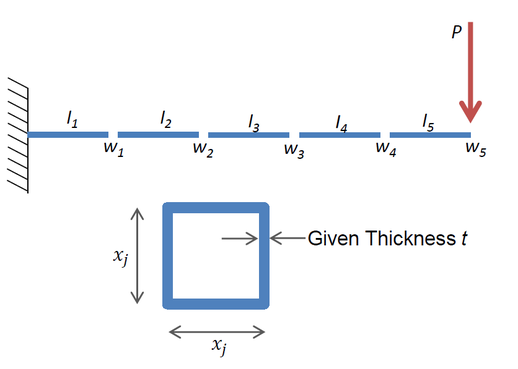

The Svanberg beam model was developed in:
Svanberg, Krister. "The Method of Moving Asymptotes-A New Method for Structural Optimization." International Journal for Numerical Methods in Engineering 24.2 (1987): 359-373.
Example CoFE input files for this page are provided here:
NASTRAN_CoFE/CoFE_examples/o2_svanbergBeamOptimization/
Given section thickness ($t$), the height ($x_j$) of five sections is optimized for minimum weight subject to a displacement constraint.
| Design Variable | Design from CoFE + SQP | Design from Svanberg |
|---|---|---|
| $x_1$ | 6.01601 | 6.016 |
| $x_2$ | 5.30919 | 5.309 |
| $x_3$ | 4.49432 | 4.494 |
| $x_4$ | 3.50148 | 3.502 |
| $x_5$ | 2.15266 | 2.153 |